一套消息，喂饱 C++、蓝图和五种脚本。
发和收之间没有共享的类型头，只有一个字符串约定 —— 所以你能直接把一个模块删掉，不会有编译错误在等你。签名照样被收集、被校验，照样长成蓝图引脚和各语言的智能提示，只是检查发生的时机换了地方。
用原生 Delegate 做模块间通信，早晚会遇到三件事：
结果就是：想删掉一个模块，编译器不让。耦合藏在编译依赖里，你以为拆的是逻辑，实际拆的是编译单元。
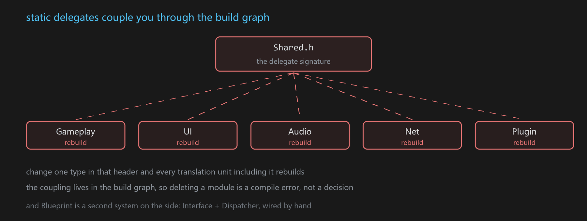
FGMPHelper::NotifyMessage(MSGKEY("Common.Action"), P1, P2);
FGMPHelper::ListenMessage(MSGKEY("Common.Action"), this,
[this](Type1& P1, Type2& P2){ /* ... */ });
C++、蓝图、脚本用的是同一套 key。
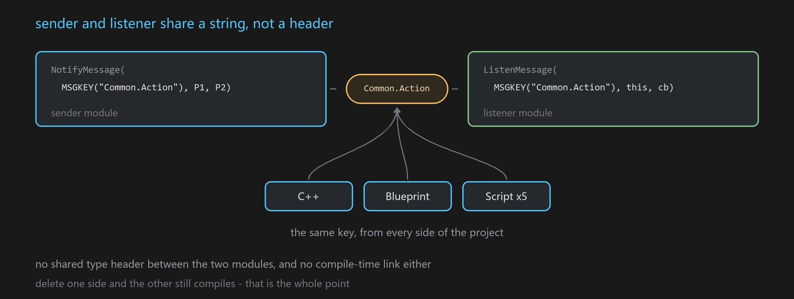
有人第一反应是：字符串没有类型检查，出错怎么办？签名在编辑期会被收集、被校验，蓝图节点还能据此自动长出引脚，脚本侧有补全和红线。该有的安全一样不少，只是检查发生的时机换了地方。
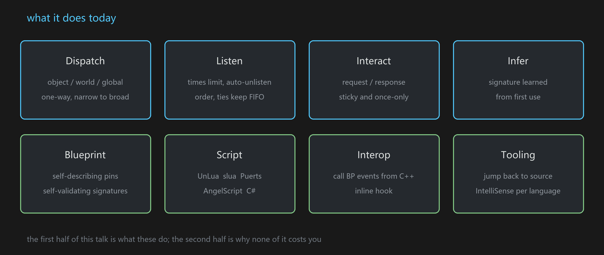
插件提供什么能力，以及在调用点上写起来是什么样子。
NotifyObjectMessage(Actor, KEY, ...); // 对象级
NotifyWorldMessage (World, KEY, ...); // World 级
NotifyMessage ( KEY, ...); // 全局
用某个 Actor 发一条，三种监听者都会收到：盯这个 Actor 的、盯它所在 World 的、盯全局的。反过来不成立 —— World 级广播不会触发只盯某个 Actor 的监听。
World 这一层在 PIE 多开时天然隔离，不用自己判断是哪个实例。
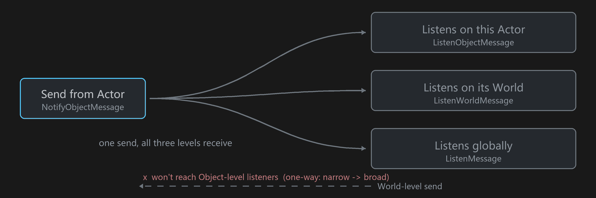
发送源不限于 UObject。继承 ISigSource，或用 GMP_EXTERNAL_SIGSOURCE 注册一下，任意一块内存地址都能当消息源 —— 自定义数据结构也能被"订阅变化"。
ListenMessage(KEY, this, cb, { .Times = 3, .Order = -10 });
Times 默认 -1（永久）。设成 N，回调 N 次后自动退订。Order 默认 0，越小越先回调；相同的按注册先后。Order 编进 GMPKey 高位，fire 前排一次序就完事，不额外维护结构；排序稳定，所以同序天然是 FIFO。
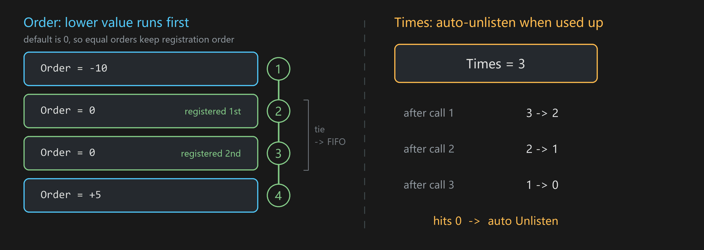
// 发的时候最后带个回调，就变成 Request
SendObjectMessage(Src, KEY, Args..., [](FResult& r){ /* 回包到了 */ });
// 收的时候最后一个参数写 FGMPResponder&，编译期就认出这是要回话的
ListenObjectMessage(Src, KEY, this,
[](FArgs& a, FGMPResponder& Rsp){ Rsp.Response(FResult{...}); });
请求和回包靠一个自增 Seq 关联，回调一次性，用完销毁。不用为一次异步查询定两个 key。
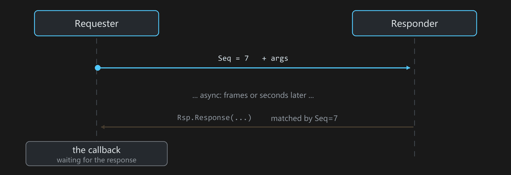
StoreObjectMessage(Actor, MSGKEY("game.ready"), Data); // 存住最新的
OnceObjectMessage (Actor, MSGKEY("boot.done"), Data); // 只送一次
// 之后才注册的监听，照样立刻收到
ListenObjectMessage(Actor, MSGKEY("game.ready"), this, [](FData& d){ ... });
解决"广播发生在监听注册之前"的时序问题。Store 存最新值，适合表达状态；Once 一次性，第一个监听消费掉就删，适合"初始化完成"这种只需送达一次的通知。
底层打包存在 GC 安全的表里，按信号和来源两个维度索引；ExactObjName 可以在同一对象上区分多条独立的粘性消息。
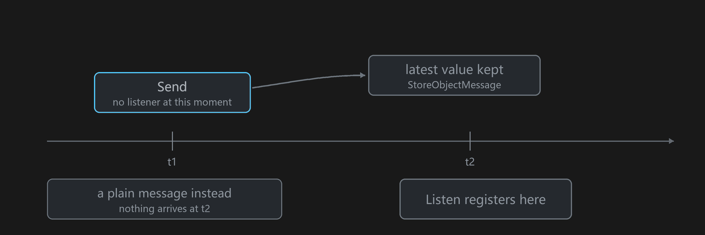
当存进去的是单个 TArray<USTRUCT>，监听方可以要整表、要固定一行、或者只要变动的行：
StoreObjectMessage(Obj, MSGKEY("Inv.Items"), MyItems); // TArray<FItem>，还是上面那个调用
// 列表本体：管容量和结构
ListenObjectMessage(Obj, MSGKEY("Inv.Items"), this,
[this](const TArray<FItem>& All, const FGMPStoreUpdate& U){ ... }); // 是引用，不是拷贝
// 某一行的 widget：只有第 5 个位置的内容真变了才回调
ListenObjectMessage(Obj, MSGKEY("Inv.Items"), 5, this,
[this](int32 Id, const FString& Name, int32 Count){ ... });
再存一次整个数组，GMP 自己算出哪里不一样再发，发送方不必描述自己改了什么。想原地改就用 TGMPStoredArray<FItem>：像数组一样用，改动自动累积，出作用域时一次性发出。这也是“同一个 key、不同的那一个”的第二种表达：第一种是每个实例一个 source，这里是一个 key 一张表 N 行 —— 适合运行期不断增减的实例，因为行的消费方持有的是位置而不是对象。
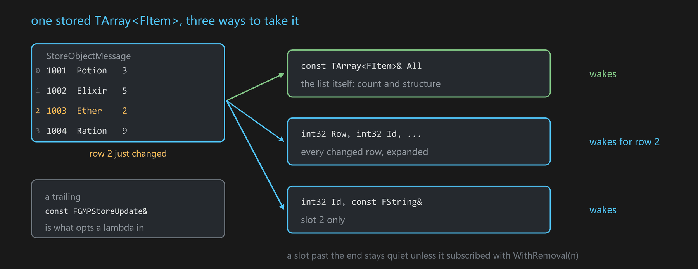
按行的形态通过反射按成员顺序展开，接收方模块不需要 include 元素类型。让 lambda 进入这套语义的开关只有一个：末尾多一个 const FGMPStoreUpdate&；其它监听一律不受影响。行号本身还兼作"这一行没了要不要通知我"的开关：5 静默跟随第 5 行，GMP::WithRemoval(5) 连消失也通知，GMP::AllRows 则是每个变化行。蓝图与脚本后端形态一致 —— 监听节点右键切到 Row，或在 Lua/TypeScript 里调 ListenRowMessage。
不值得存的表（每 tick 重算那种）直接发也行：普通 SendObjectMessage 一个 TArray 同样能到达 AllRows 监听者，表直接读发送方的实参。但仅此一种形态，且永远是整表重载 —— 没有存下来的旧表可比，就算不出变了哪几行；固定行订阅在这条路上会变成每次都醒而非只在自己那行变时醒，因此被明确挡掉。细节见 Collection messages。
发送 SendMessage(MSGKEY("ABC"), a, b, c) 之后，下面几种监听都兼容：
ListenMessage(MSGKEY("ABC"), this, [](TypeA a, TypeB b, TypeC c){});
ListenMessage(MSGKEY("ABC"), this, [](TypeA a, TypeB b){});
ListenMessage(MSGKEY("ABC"), this, [](TypeA a){});
ListenMessage(MSGKEY("ABC"), this, [](){});
语义类似函数默认参数：可以给现有消息往后追加参数，不影响已有的监听代码。
不用先在 C++ 里声明，第一次用就把签名录进表。两个方向都能推：
录进表之后，类型校验、智能提示、codegen 就都有了。这一段在 Editor / Development 下生效（GMP_WITH_DYNAMIC_CALL_CHECK），Shipping 里整段编译掉。
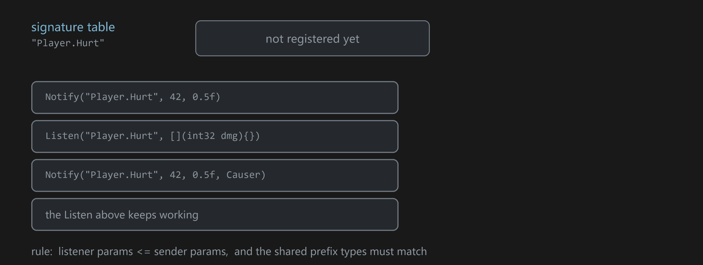
自解释 —— 在蓝图里放一个 GMP 消息节点，下拉选中一个 Tag，节点按签名表长出这个 Tag 的参数引脚：类型、名字、默认值都对。换一个 Tag，引脚当场重建。引脚形态是签名的投影，不需要手动配任何东西。
自校验 —— 引脚类型既然来自签名表，连错类型在蓝图编译期就被拒绝，不用等到运行时。校验发生在 uncook 阶段的蓝图编译流程里，编译产物不额外携带校验信息。Editor / Development 下还有一层运行期一致性检查（GMP_WITH_DYNAMIC_CALL_CHECK）：签名与历史记录不符会告警并中止本次派发，兼容则更新签名表。
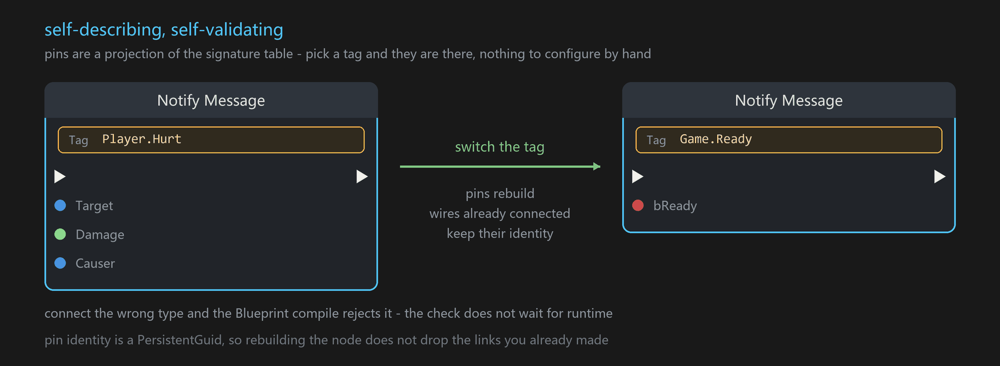
消息节点只是其中一个。底下那层叫 Neuron，是一套自解释 K2Node 的基建 —— 引脚带 PersistentGuid，节点重构时引脚身份不丢，已经连好的线不会断。
在它上面长出来的节点：
| 节点 | 做什么 |
|---|---|
| NeuronAction | 选一个异步动作的工厂函数，节点自己展开：输入是 Spawn 参数，每个回调 delegate 变成一个独立的输出执行引脚（各自带自己的数据引脚），外加 Cancel |
| GenericInvoker | 沿成员链走到目标对象，读成员值或调函数。ExpandNode 把整条链展开成 FName 字面量，编译出来的蓝图不硬引用那个目标类 |
| StructUnion 一组 | Set/Get StructUnion、StructTuple、DynStructOnScope，异构数据的打包和取用 |
| FormatStr / EventGraphFunction / DerefParam | 零碎但常用 |
GMP 自带一个 NeuronAction 的实例 —— UGMPJsonHttpUtils，类上直接标了 meta = (NeuronAction)：
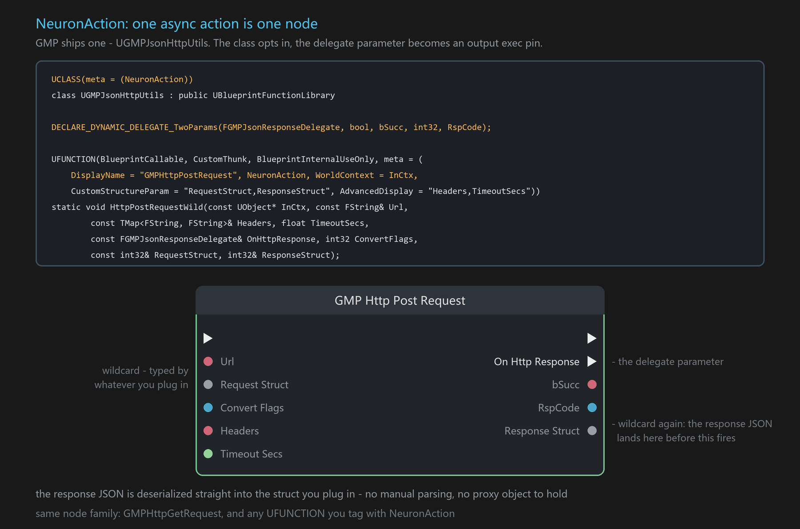
CustomStructureParam 让请求体和响应体都是 wildcard，连什么就是什么类型；响应 JSON 在执行引脚触发前就已经反序列化进你连的那个结构体 —— 不用手写解析，也没有 proxy 对象要管。
UnLua、slua、Puerts、AngelScript、C#。
-- 脚本里照旧这么写
NotifyObjectMessage(self, "Player.Hurt", dmg, causer)
加载或编译的时候，这行会被自动改写成 key 固化过的强类型调用。四种脚本四个介入点：
| 后端 | 介入时机 |
|---|---|
| UnLua / slua | 加载期改文本（FUnLuaDelegates::CustomLoadLuaFile / setLoadFileDelegate） |
| AngelScript | 编译前 preprocessor（OnPostProcessCode） |
| Puerts | tsc 的 AST 变换 |
| C# | 不需要改写 —— 强类型语言，泛型 MsgTag<T...> 让编译器直接约束住 |
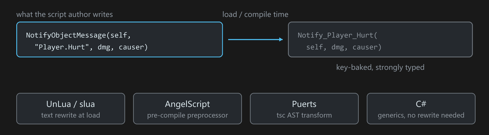
策划写的还是那个通用的 NotifyObjectMessage，一个字不用改；真正跑的是编译期生成的强类型函数，走 key 固化的快路径。
签名表 codegen 成各语言自己的声明形式，写错类型当场红线，签名变了自动重新生成。
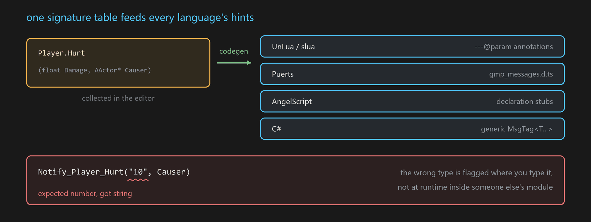
脚本每次收发消息，用各语言引擎自带的调试接口抓到调用点的文件和行号 —— lua 用标准 debug 库，Puerts 用 v8 StackTrace，AngelScript 用它的 context，C# 用编译器注入的 CallerFilePath。GMP 不改这些引擎的任何东西，只读它们本来就维护的调试信息。
在 MessageTag 面板里点一下，IDE 就打开那个文件跳到那行；同一个面板里还并排列着这个 Tag 的蓝图节点和引用它的资产。
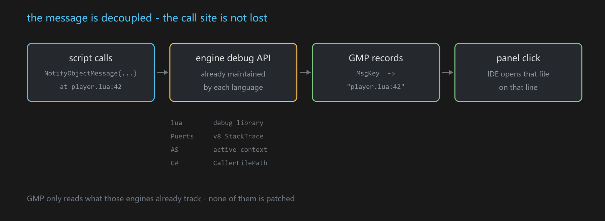
RefEvent —— C++ 直接调蓝图事件，而且能拿回结果。蓝图的 CustomEvent 是 void 的，本来没有返回值，靠 out 参数直接写回 C++ 的栈变量：
int32 out = -1;
TGMPBPFastCall<void(int32, int32&)>::FastInvoke(Obj, Func, 21, out); // out == 42
走编译期签名匹配的快路径，不经过 ProcessEvent 那套反射。
InlineHook —— 给任意非虚函数打内联 Hook，Windows / Linux / Android 都能用。
两个的共同点是不动被挂接的那一方。
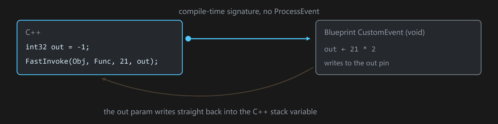
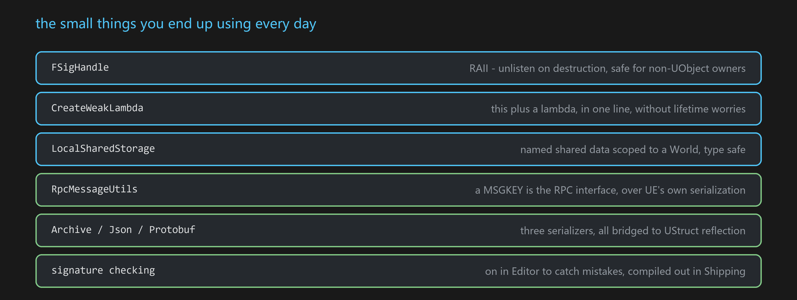
FSigHandle —— RAII，析构自动退订，非 UObject 的类也能安全用CreateWeakLambda 系列 —— this 加 lambda 一行完成绑定，同时支持智能指针（CreateSPLambda）LocalSharedStorage —— World 范围内的命名共享数据，类型安全RpcMessageUtils —— MSGKEY 直接当 RPC 接口，走 UE 的网络序列化GMPArchive / GMPJson / Protobuf(upb) / YAML —— 都能桥到 UStruct 反射；FGMPValueOneOf 做动态取值TGMPNativeInterface —— 基于 Native 接口的消息交互Class2Name / Class2Prop —— 类型 ↔ 名字 ↔ FProperty*，编写库代码和支持函数时可省下大量样板Plugins/GMP 放进项目的 Plugins/ 目录（或引擎的 Engine/Plugins/）.uproject 里启用 GMP也可以从 Unreal Marketplace 获取。
上面那些为什么不用拿运行期开销换。本部分的数字是实测的，不是估的。
朴素做法是 "Common.Action" → FName → TMap 哈希查表 → store → 派发。消息是高频路径，一帧几百上千次是常态，每次都做一遍哈希查表并不划算。而这个字符串，编译期就知道了。
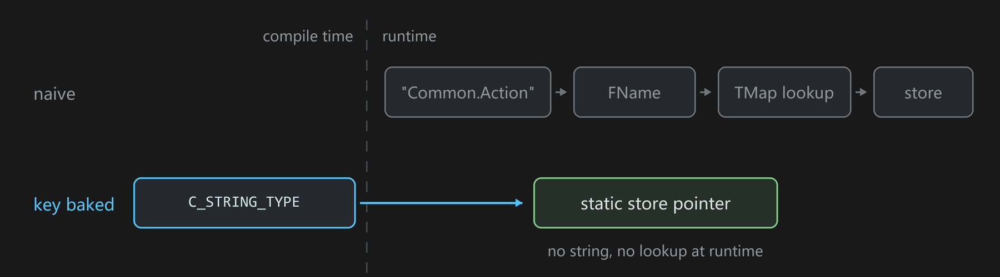
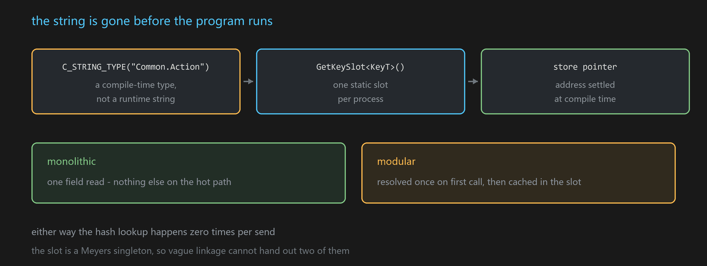
C_STRING_TYPE("Common.Action") // 编译期类型，不是运行期字符串
GetKeySlot<KeyT>().GetStore() // 进程里唯一的那个静态 store
monolithic 下就是一次字段读；模块化下第一次解析一次然后缓存在 slot 里。两条路的哈希查表次数都是零。 slot 是 Meyers singleton，vague linkage 不会发出两个实例。
单测里在 listener 内部 FPlatformStackWalk::CaptureStackBackTrace，数 send 调用点到回调之间的 GMP 帧：
| 构建 | by-name（FName + 查表） | by-store（key 固化） |
|---|---|---|
| 未优化（DebugGame） | 9 层 | 7 层 |
| 优化后（Development） | 4 层 | 3 层 |
未优化那 9 层里，大半是类型擦除用的脚手架 —— 适配层、派发 lambda、FlexBackendThunk、TGMPFunction::operator()、拆包 thunk。开了优化这 5 层被编译器整个吃掉，派发循环直接落到你的回调上。
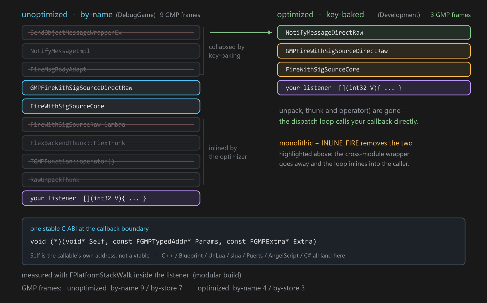
剩下 3 层里 GMPFireWithSigSourceDirectRaw 带 GMP_API 导出，模块化下跨 DLL，优化器过不去这道墙。GMP_WITH_INLINE_FIRE=1 配 monolithic 就是拆这堵墙：GMP_API 展开为空，派发循环 FORCEINLINE 摊在头文件里由调用方展开，上面那 3 层里的前两层随之消失。
原始栈（带符号）和复现命令见 docs/dispatch-stack-measured.md。表里两行都是 modular 构建；INLINE_FIRE 需要 monolithic。
listener 存的是一个 thunk 函数指针加一个对象地址，不是虚表：
reinterpret_cast<R(*)(void*, Args...)>(GetCallable())(GetObj(), Args...);
这句在函数末尾，-O2 会做 sibling call，直接 jmp 过去，不建栈帧。小 lambda 走 SBO 存在 16 字节槽里，不碰堆。
到这一步整条路上只剩一个运行期才知道目标的间接跳转 —— 这是观察者模式本身的下限，发消息的人本来就不知道谁在听。
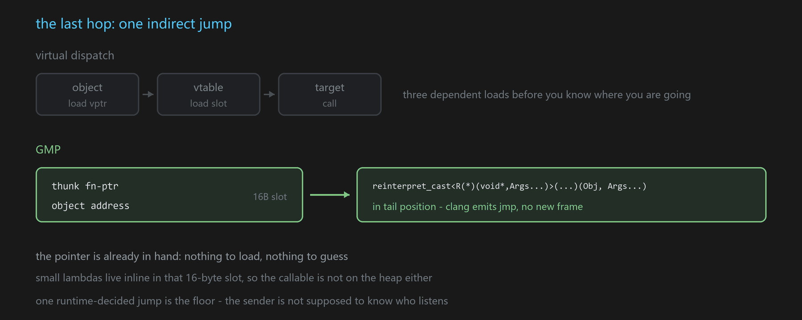
五种脚本的回调全都归一到同一个 C 签名。类型擦除之后，边界上就是这么个裸函数指针：
void (*)(void* Self, const FGMPTypedAddr* Params, const FGMPExtra* Extra);
三个参数，首参 Self 是可调用体自己的地址，不是 UObject，也不是虚表指针 —— 所以这一跳是间接跳转，不是虚派发。
Params 是逐参数擦除后的地址数组。类型名有两条通路，别混了：
struct FGMPTypedAddr { // GMPStruct.h
uint64 Value = 0; // 恒有：地址擦成 uint64
#if GMP_WITH_TYPENAME // = DYNAMIC_TYPE_CHECK || DYNAMIC_CALL_CHECK || TYPE_INFO_EXTENSION
FName TypeName; // 只有 Editor / Development 才随行
#endif
};
struct FGMPExtra { // 同文件
int32 Size; // 参数个数
const FName* TypeNames; // 每个签名一份的静态类型名表
FSigSource Source; FName Key; FGMPKey Seq;
};
也就是说 Shipping 下 FGMPTypedAddr 退化成一个裸 uint64，Params 就是纯粹的地址数组，逐参数的类型名整个编译掉；需要类型信息的场合走 Extra->TypeNames 配 Extra->Size。参数一律以地址数组的纯 C 形态过语言边界，每种语言只实现这一个入口。
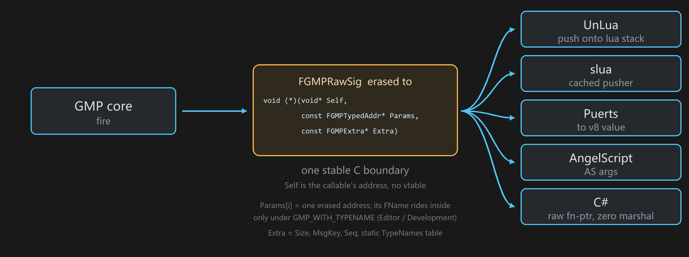
C# 把这条契约用到了极致：注册一个 [UnmanagedCallersOnly] 入口的裸函数指针，fire 时 native 直接调过去，零反射、零 marshal。
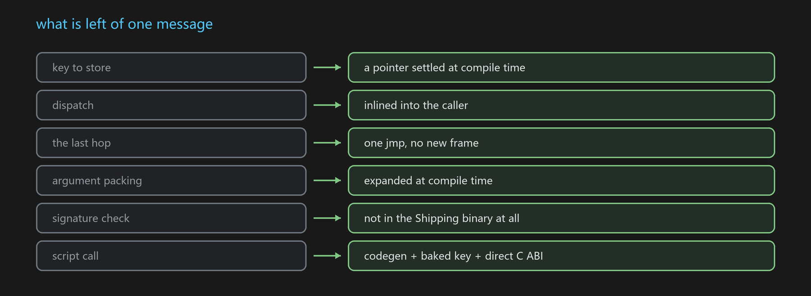
| 宏 | 默认 | 作用 |
|---|---|---|
GMP_SIGNAL_BACKEND_FLEX |
1 |
可插拔信号后端，存储 / ABI / handler 三个关注点正交，换后端不动调用点 |
GMP_WITH_DIRECT_SIGNAL |
1 |
类型化直发路径 |
GMP_STATIC_STORE_MONOLITHIC |
IS_MONOLITHIC |
key 固化到静态 store 的前提 |
GMP_WITH_STATIC_STORE |
由上面两个推导 | DIRECT_SIGNAL && STATIC_STORE_MONOLITHIC |
GMP_WITH_INLINE_FIRE |
0 |
派发循环内联进调用方，需要 monolithic 才生效（GMP_WITH_INLINE_FIRE_ENABLED = INLINE_FIRE && STATIC_STORE） |
GMP_WITH_DYNAMIC_CALL_CHECK |
Editor/Dev 1，Shipping 0 |
签名一致性校验、签名反推 |
GMP_WITH_STATIC_MSGKEY |
!WITH_EDITOR |
运行期不再保留 MsgKey 字符串 |
GMP_SLUA_STATIC_BIND / GMP_UNLUA_STATIC_BIND / GMP_PUERTS_STATIC_BIND / GMP_CSHARP_STATIC_BIND |
0 |
各脚本后端的 codegen 静态绑定 |
GMP_WITH_INLINE_FIRE 默认关：默认构建保持跨 DLL 边界干净、不涨代码体积，每次 fire 只多一次常数级的 out-of-line 调用。极致路径是给 monolithic 打包构建的主动选择。
所有配置（modular / monolithic、默认后端 / Flex 后端、inline / out-of-line fire）跑的是同一套单测，69 个用例全过 —— 分层开关拿体积换开销，不拿正确性换。
FSigSource、FMessageBody、Class2Name / Class2Prop。其中的性能一节已被上面的实测取代见 LICENSE。